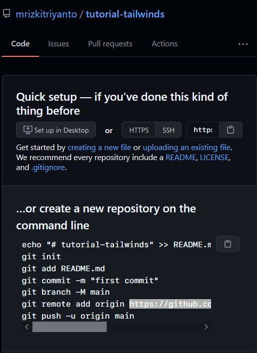
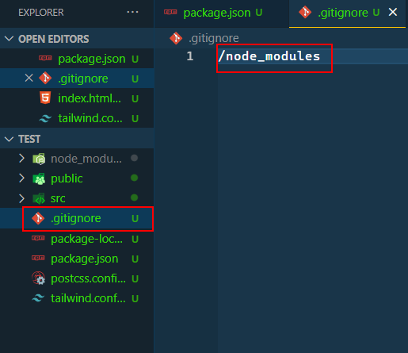
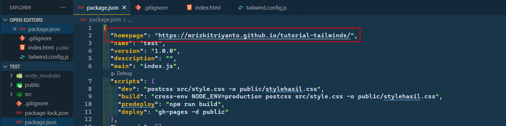
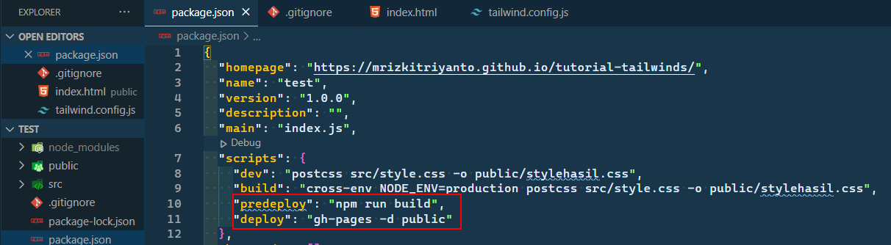

Deploy Project Tailwind ke Github Pages
Senin, 12 Juli 2021
Intro
Artikel ini gua buat sebagai catatan dan reminder gua dikemudian hari, dan juga sharing kepada teman - teman.
Gimana Caranya
Pertama, Buat repository baru di Github.
Kita perlu menginisiasi git pada project kita dengan mengetikkan perintah berikut di terminal
git init
Kita wajib install gh-pages dengan menjalankan perintah
npm install gh-pages
Selanjutnya kita perlu menambahkan file .gitignore di root project kita yang isinya sebagai berikut
Itu berarti folder node_modul tidak akan di push ke repository remote github kita.
Kemudian Kita juga perlu menambahkan Homepage di dalam file package.json yang merupakan repository kita
"homepage": "https://mrizkitriyanto.github.io/tutorial-tailwinds/",

Setelah itu, kita juga perlu menambahkan script di dalam file package.json
"predeploy": "npm run build",
"deploy": "gh-pages -d public"

Sebelum menjalankan perintah deploy, kita harus menambahkan remote github kita dengan cara mengetikkan
git remote add origin https://github.com/mrizkitriyanto/tutorial-tailwinds.git
Belom selesai gesss, kita harus commit pekerjaan kita terlebih dahulu. Dengan mengetikkan perintah
git add .
git commit -m "isi ini dengan komentar atau pesan commit apa saja yamg diubah"
Setelah itu, barulah kita bisa menjalankan perintah
npm run deploy
Push code kita ke remote github.
Selain deploy kita perlu push code kita, karena yang di deploy hanya folder public saja. Kalo kita ga push code kita ke github, kita akan kesusahan jika sewaktu waktu folder projet kita hilang atau ketika kita ingin pull code kita di laptop lain.
Jalankan perintah
git push -u origin master
Sekian.